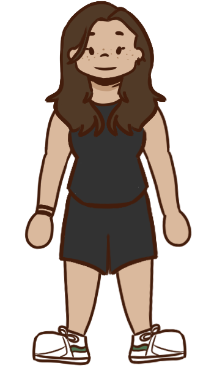
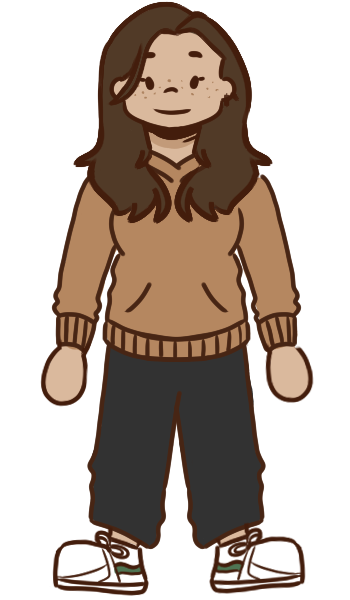
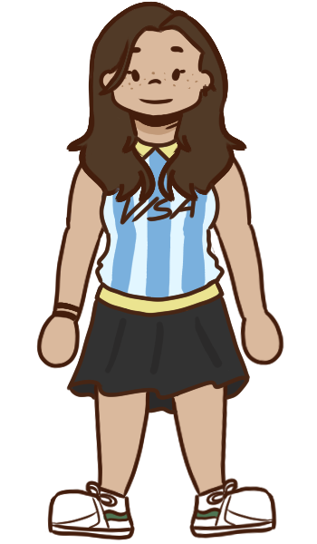
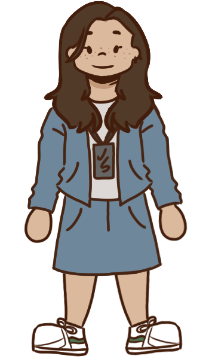
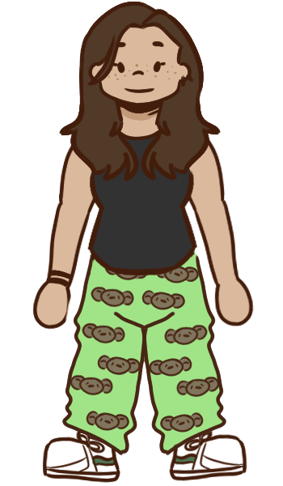
Daily Juli
Hello, my name is Juli and this is how you'd usually find me dressed like. I use this hoodie a lot. Like, a lot. Here's some basic facts about me:
That's me in the pictures!! I was born on December 3rd 2007, which makes me an 18 year old Sagittarius. My hobbies are coding, drawing and learning languages. My native language is Spanish, I'm a B2/C1 English speaker, and I'm starting to learn Mandarin. I've studied Computer Science theory since 2024 but I've just started making my own projects on March of this year.
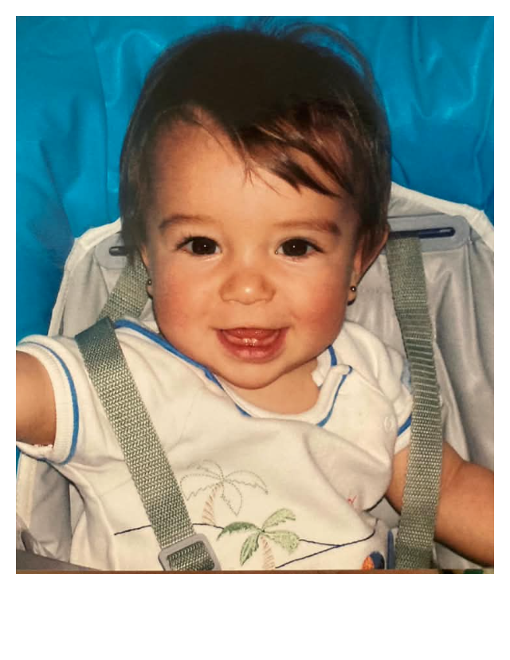
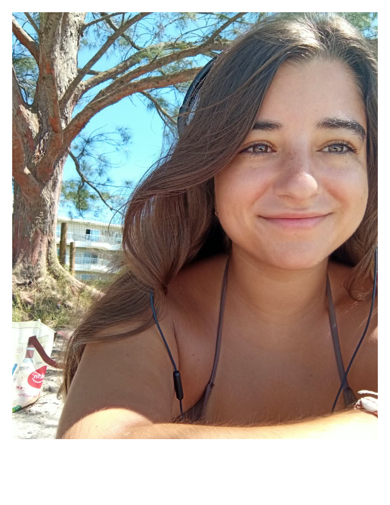
Patriotic Juli
I'm from Argentina, and like every argentinean I'm insufferably passionate about my country. These are some of my favorite things about it:
These are some of my favorite foods from my country. In order, Chocotorta, Torta Asada and Mate. Argentina's most popular cities had a lot of Italian and Spanish immigrants after WWII, so our cuisine was very influenced by theirs.
I'm from Rosario, Santa Fe (top pic), and I've recently been to Capital Federal, Buenos Aires (bottom pic). These are definitely my favorite cities, but I also love Mendoza, Carlos Paz and Humahuaca! I think what I love the most about this country is how friendly and close everyone is. Strangers treat you like friends and friends treat you like family. It's truly lovely!
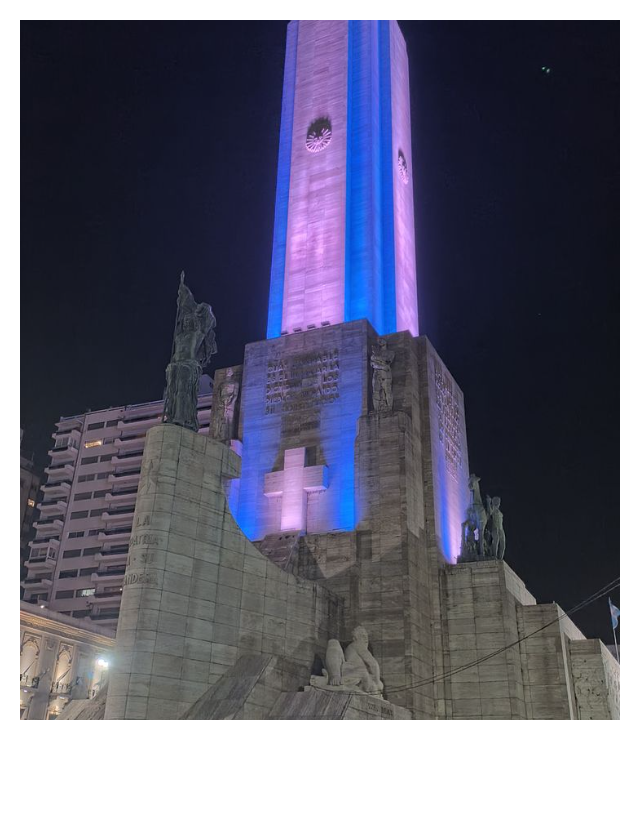
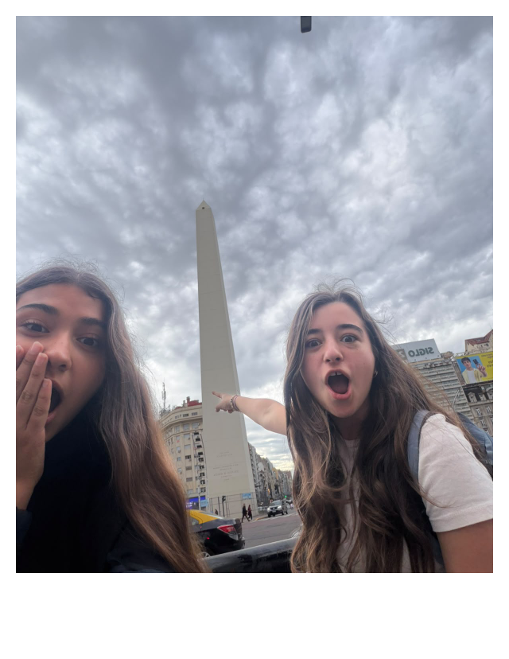
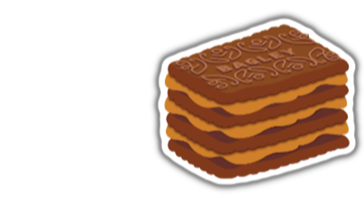
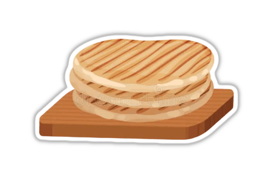
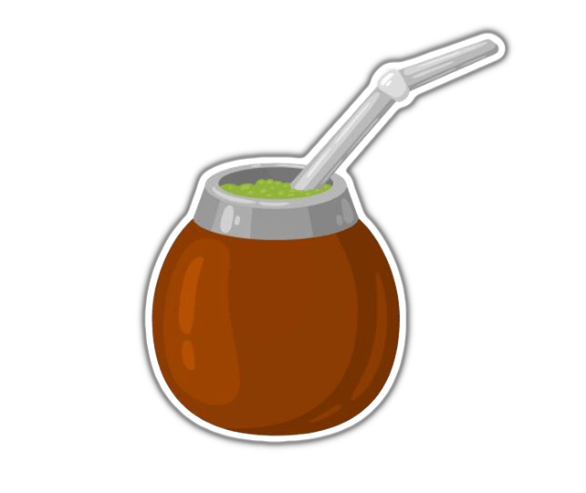
Professional Juli
On December, I'll graduate as an IT technician. I plan on majoring in Computer Science next year. Here's some of my CS experience:
At Home Juli
I'm wearing this as I write this span tag. Some of the things I love doing when I have free time are: